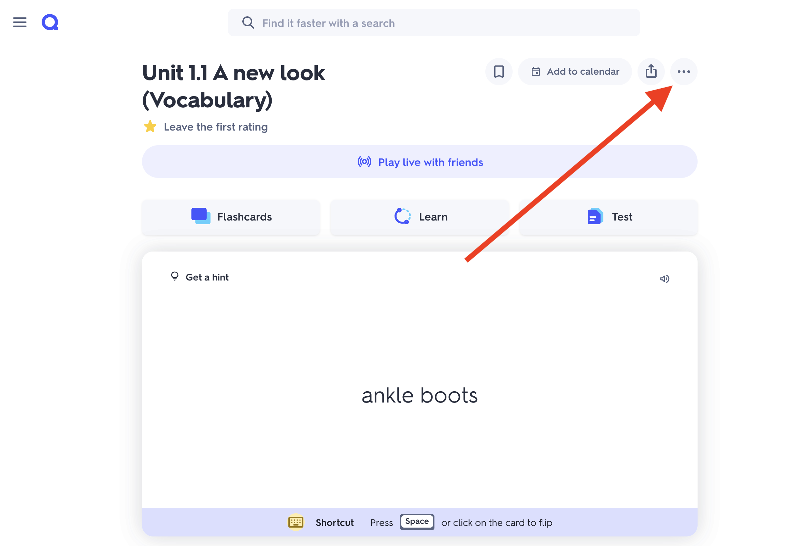
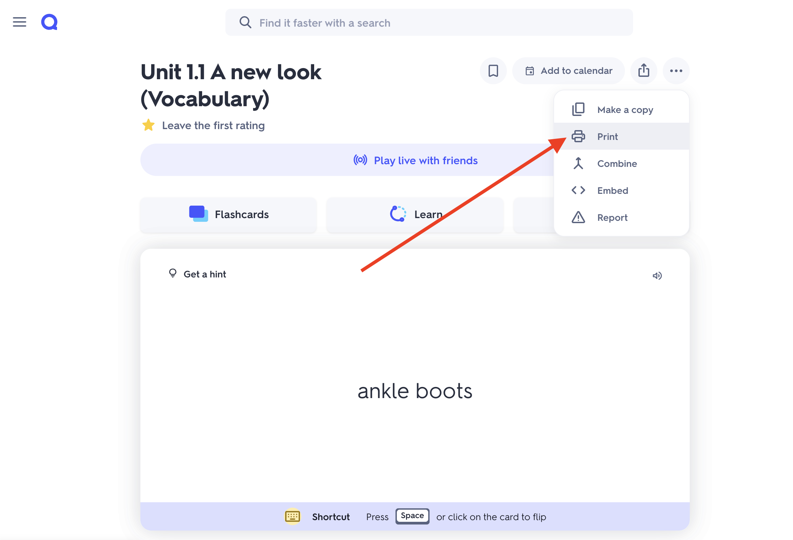
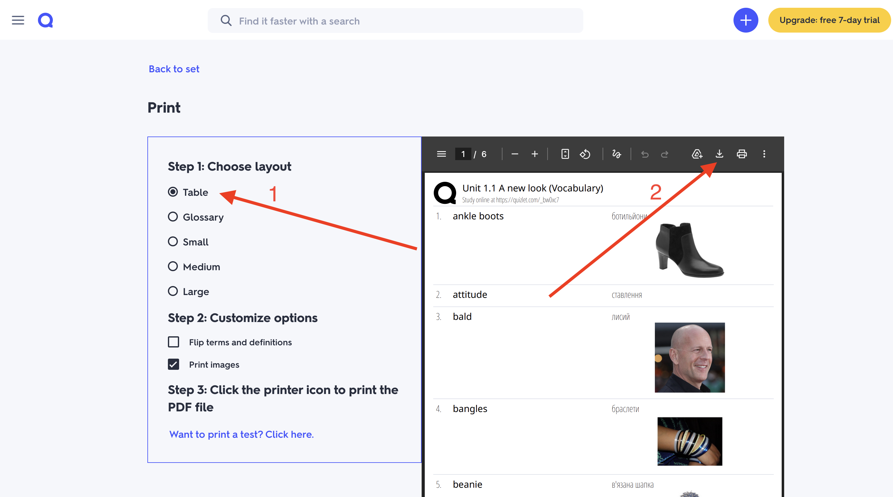
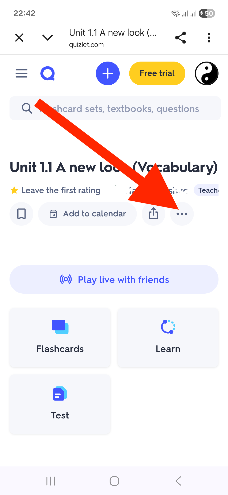
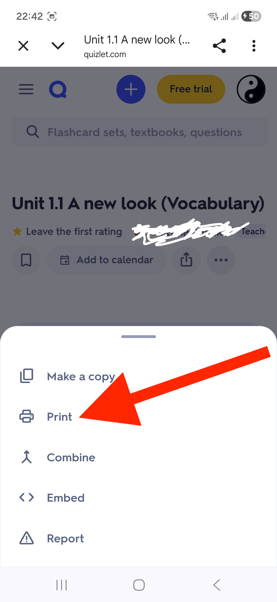
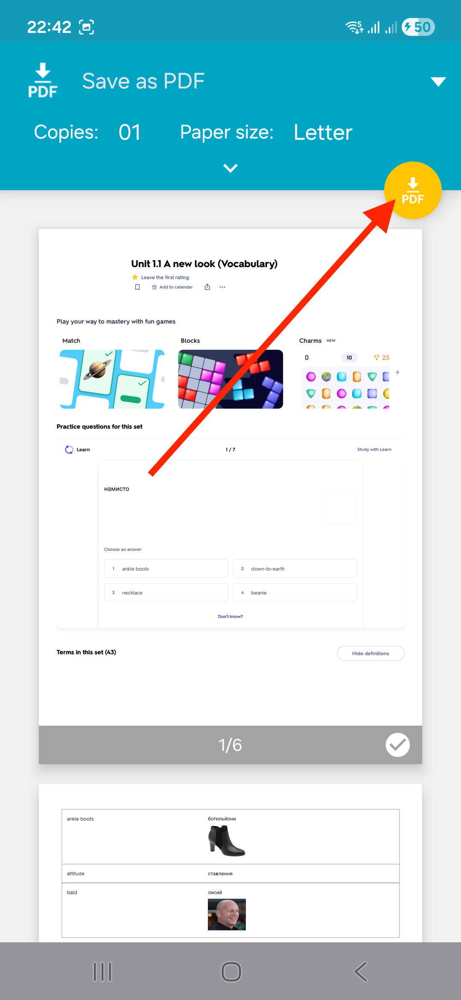
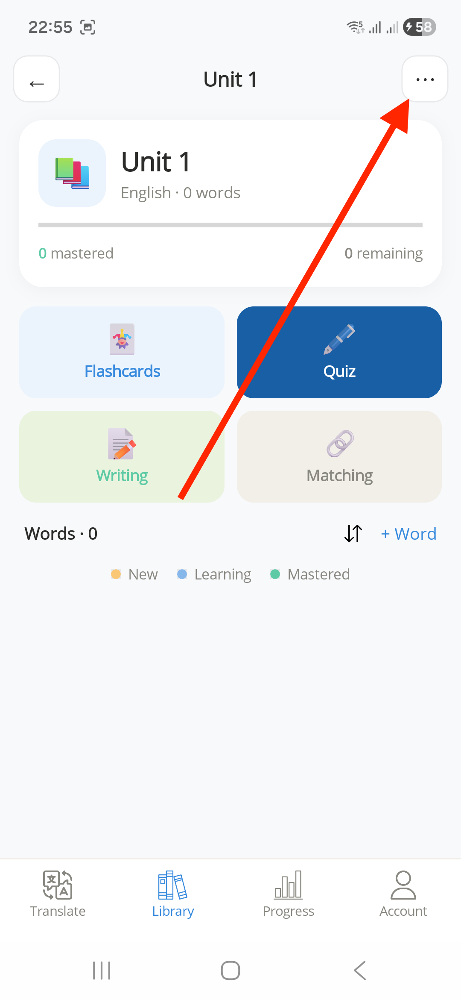
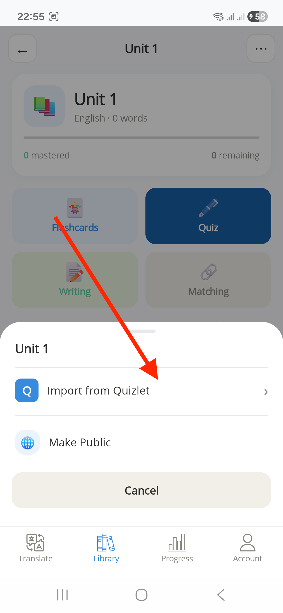
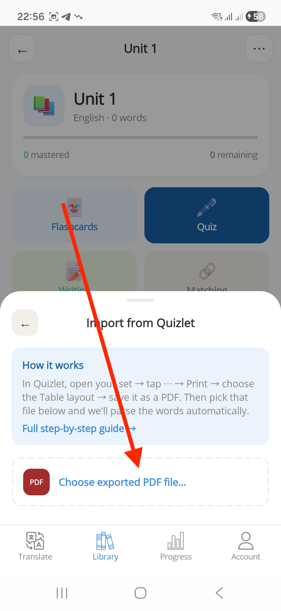
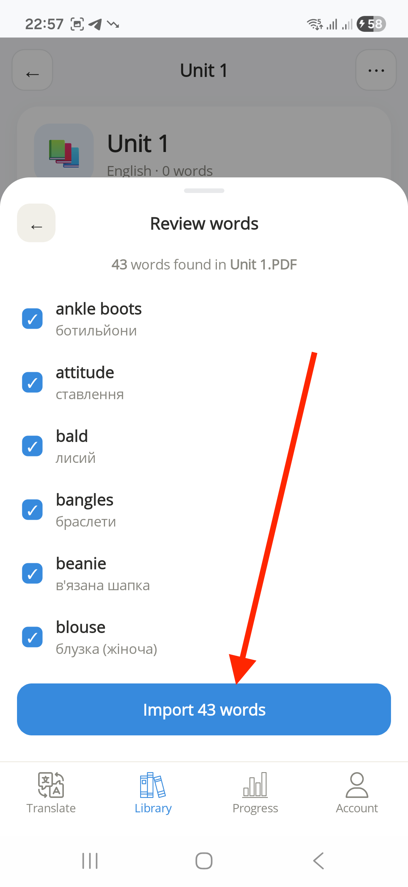

Quizlet doesn't offer a free, one-tap export to a format every app can read — plain-text/CSV export is a paid Quizlet feature. The free workaround is Quizlet's own Print option, which anyone can use to generate a PDF of a set. Atom Translate reads that PDF directly and pulls out the terms and translations for you — no retyping required.
One thing to keep in mind: the import itself always happens in the Atom Translate app on your phone. You can create the PDF on a computer if that's easier, but you'll need to get it onto your phone to finish the import (see Step 2 below). A full desktop/web version of Atom Translate is planned, but it isn't available yet.
Quizlet's Print option works the same way on a computer or a phone — it opens a generated PDF of the set instead of sending anything to an actual printer. Do this step on whichever device is easier; if you use a computer, you'll just need to move the resulting PDF to your phone before Step 3.



The screenshots below are from Android; the underlying Quizlet steps — ⋯ then Print — are the same on iPhone, though the exact save screen will look different.



Atom Translate's Quizlet import currently only runs in the phone app, so if you created the PDF on a computer, get it onto your phone before continuing — email it to yourself and open the attachment, save it to a cloud drive (Google Drive, iCloud Drive) and open it from there, or send it over with AirDrop / Nearby Share. If you already exported the PDF on your phone in Step 1, it's already in your Downloads or Files app, so you can skip straight to Step 3.
Open Atom Translate on your phone and go to the folder you want to add the words to — create a new one first if you don't have one yet (Library → + → New Folder).




Make sure you opened the ⋯ menu from inside a folder, not from the Library home screen or the Translate tab — the option only appears there. If it's still missing, make sure the app is updated to the latest version, or contact support with your app version and platform.
This usually means the PDF wasn't exported with the Table layout. Go back to Quizlet, re-export with Table selected, and try importing again. You can also fix individual words on the Review words screen before confirming, or edit them afterwards in your library.
Make sure it's a genuine PDF saved through Quizlet's Print option — not a screenshot, a Word document, or a renamed file.
See Step 2 above: email it to yourself, save it to a cloud drive (Google Drive, iCloud Drive), or AirDrop / Nearby Share it to your phone, then pick it from the file picker in Step 3.
You can always add words manually, or use Import from CSV if you already have your vocabulary in a spreadsheet — see the Help Center FAQ for details.
Email gandribidav@gmail.com with a screenshot of what you're seeing and your platform (Android or iOS), or use our bug report form.